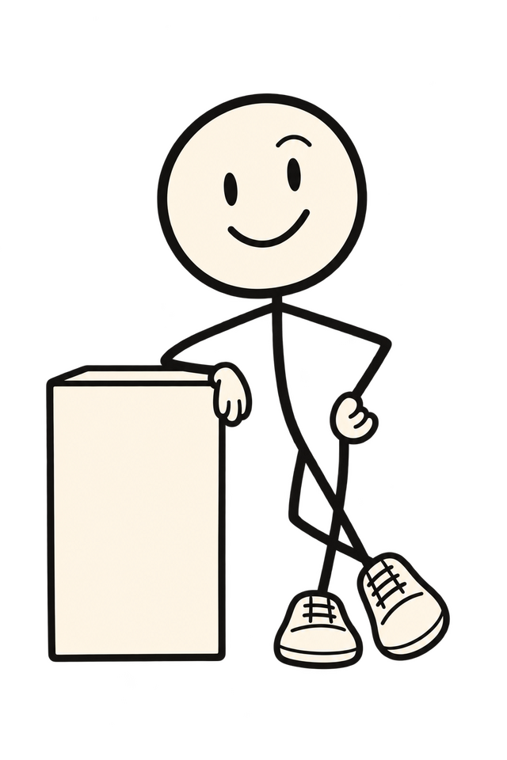
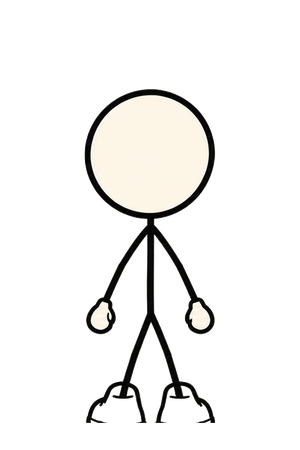
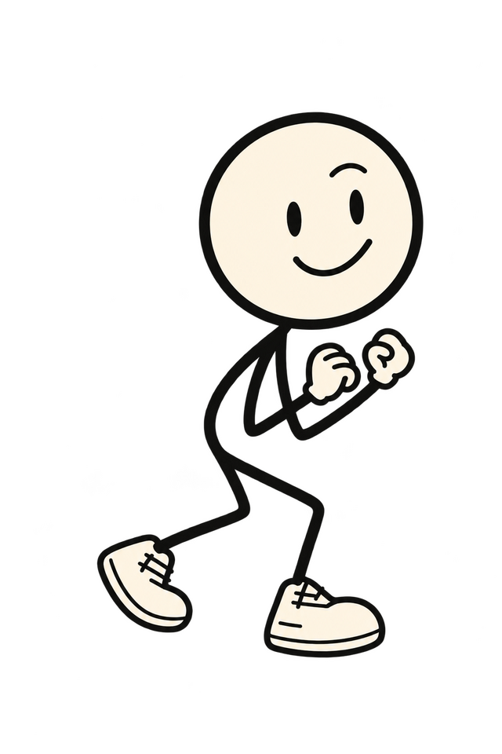
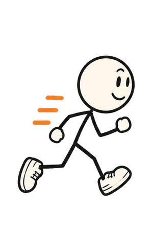
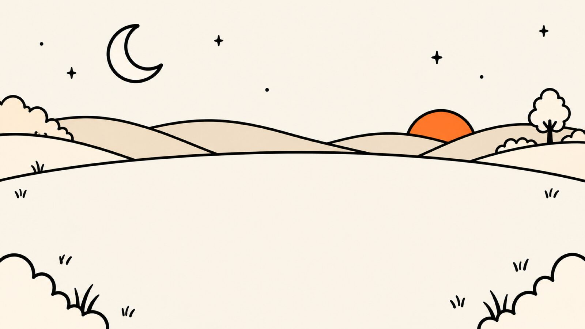
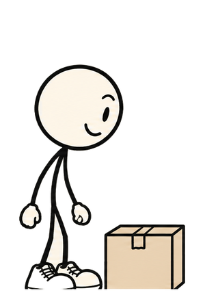
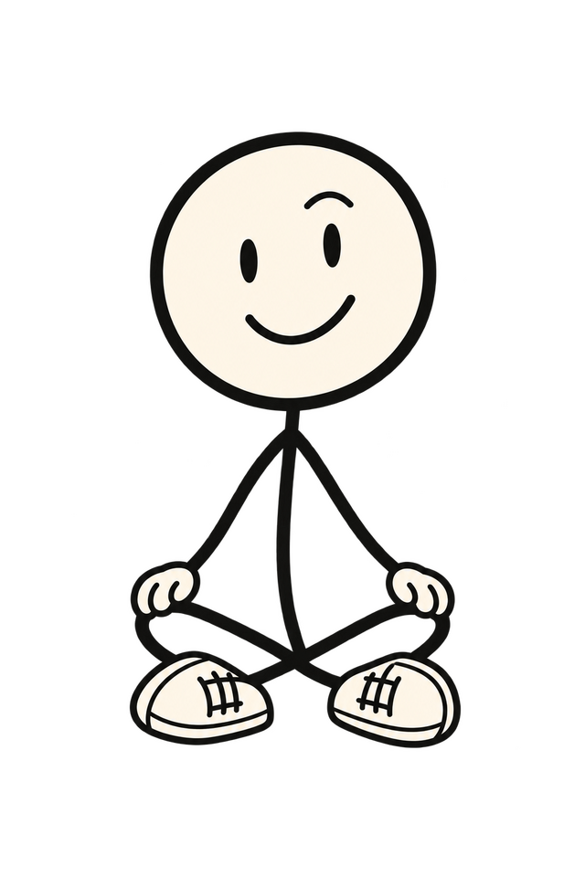
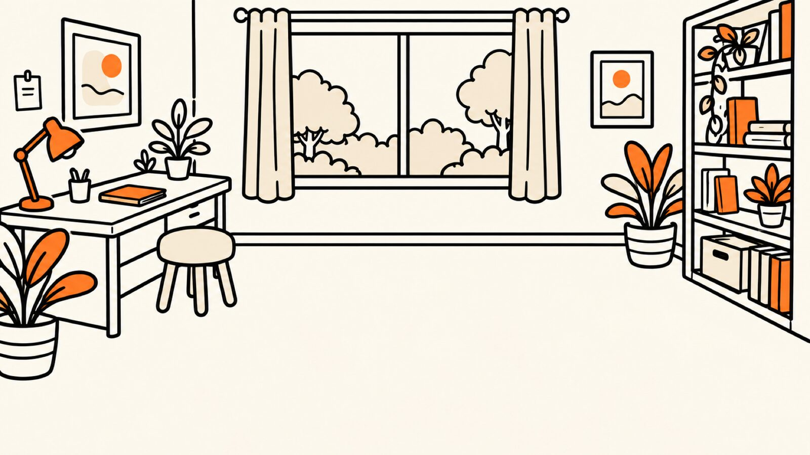
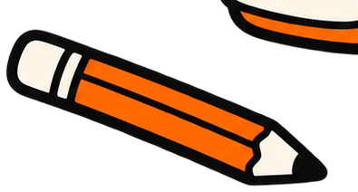

One ordinary day, ten small problems
What can Doddy do? Quite a lot, actually.
Ten random moments from an ordinary day, and what a mate in your pocket does with them.
Scripted demonstrations, each labelled with what's built today. Doddy is an AI, not a person.

Jump to a moment
08:45
You're late. Again.
The alarm went off. You went back to sleep. The meeting didn't.
- Reads today's calendar out loud, with the bit you'd rather not hear first.
- Drafts a two-line "running late" message. You tap send, Doddy never does.
- Nothing in your calendar changes unless you tap Add.
Calendar and messages · in testing
Send this one to someone who's always late
08:45


0 to 600 ms · the problem. Walks in from the left (walk strip, 8 frames at 8 fps, 600 ms, ease-out); the time writes itself (clip reveal, 300 ms); the alarm rattles twice (rotate ±6°, 2 × 120 ms).Reduced motion: Doddy and the prop are simply there.

Doddy, what's happening today?
Well, your meeting started 15 minutes ago. Excellent start.
600 to 1450 ms · the ask and the beat. At 600 ms your bubble pops in (scale .97 → 1 and opacity, 150 ms); at 750 ms Doddy swaps to the resting pose (an image swap, no tween); his line reveals word by word over 700 ms (9 words).Reduced motion: both bubbles appear at once, no reveal.
Well, your meeting started 15 minutes ago. Excellent start.
Doddy, what's happening today?
1450 to 1800 ms · the fix. The app's card slides up from the bottom edge (translateY 24 px → 0, opacity, 300 ms, ease-out); the stamp lands at 1600 ms (scale 1.3 → 1 and opacity, 200 ms). At rest at 1.8 s. This frame is the page.Reduced motion: this frame, still, from the start.
09:10
Jacket or no jacket?
The window says sunny. The window has lied before.
- Checks the forecast for where you are, when you ask.
- Says the useful bit first. The small talk is optional.
- Tells you what left the phone: the place name, nothing else.
Weather · in testing
Send this one to someone who never checks the weather
09:10


0 to 600 ms · the problem. Pops up from behind the counter (pop-in strip, 3 frames, 240 ms); the time writes itself (clip reveal, 300 ms); steam rises from the cup (puff, fade in 200 ms).Reduced motion: Doddy and the prop are simply there.

Jacket or no jacket?
17 degrees now, rain at four. Jacket. Obviously.
600 to 1450 ms · the ask and the beat. At 600 ms your bubble pops in (scale .97 → 1 and opacity, 150 ms); at 750 ms Doddy swaps to the resting pose (an image swap, no tween); his line reveals word by word over 700 ms (8 words).Reduced motion: both bubbles appear at once, no reveal.
17 degrees now, rain at four. Jacket. Obviously.
Jacket or no jacket?
1450 to 1800 ms · the fix. The app's card slides up from the bottom edge (translateY 24 px → 0, opacity, 300 ms, ease-out); the stamp lands at 1600 ms (scale 1.3 → 1 and opacity, 200 ms). At rest at 1.8 s. This frame is the page.Reduced motion: this frame, still, from the start.
10:20
The awkward text.
Three drafts. Two deleted. One "hey" sent by accident.
- Writes a draft in your voice, not his.
- Three nudges: funnier, shorter, more confident.
- Opens Messages with the draft. Sending stays your job.
Message drafts · in testing
Send this one to someone who sends "hey" by accident
10:20


0 to 600 ms · the problem. Tiptoes in (tiptoe pose slides 40 px, 500 ms, ease-out); the time writes itself (clip reveal, 300 ms); the phone buzzes (translate ±2 px, 3 × 80 ms).Reduced motion: Doddy and the prop are simply there.

AlexYesterday was fun :)
Help me reply to this without sounding desperate.
That's a fairly ambitious request, but okay.
600 to 1450 ms · the ask and the beat. At 600 ms your bubble pops in (scale .97 → 1 and opacity, 150 ms); at 750 ms Doddy swaps to the resting pose (an image swap, no tween); his line reveals word by word over 700 ms (7 words).Reduced motion: both bubbles appear at once, no reveal.
AlexYesterday was fun :)
That's a fairly ambitious request, but okay.
Help me reply to this without sounding desperate.
Alex, 10:04Yesterday was fun :)
Yesterday was fun. Same again next week? No pressure, my calendar is mostly staring at walls.
1450 to 1800 ms · the fix. The app's card slides up from the bottom edge (translateY 24 px → 0, opacity, 300 ms, ease-out); the stamp lands at 1600 ms (scale 1.3 → 1 and opacity, 200 ms). At rest at 1.8 s. This frame is the page.Reduced motion: this frame, still, from the start.
13:00
What should we eat?
Two hungry people. Forty minutes of "I don't mind."
- Turns "cheap, near the centre" into a real search and opens Apple Maps.
- Cheap, best rated or something different: each one changes the search.
- Picking the winner for you: later, maybe.
Maps · in testing
Send this one to someone who "doesn't mind"
13:00


0 to 600 ms · the problem. Runs in (run strip, 6 frames at 8 fps, 500 ms); the time writes itself (clip reveal, 300 ms); the menu card flutters (rotate -3° → 0, 200 ms).Reduced motion: Doddy and the prop are simply there.

Find somewhere good and cheap near the centre.
Finally. A problem worth solving. Opening Maps.
600 to 1450 ms · the ask and the beat. At 600 ms your bubble pops in (scale .97 → 1 and opacity, 150 ms); at 750 ms Doddy swaps to the resting pose (an image swap, no tween); his line reveals word by word over 700 ms (7 words).Reduced motion: both bubbles appear at once, no reveal.
Finally. A problem worth solving. Opening Maps.
Find somewhere good and cheap near the centre.
"cheap pizza near the centre"
1450 to 1800 ms · the fix. The app's card slides up from the bottom edge (translateY 24 px → 0, opacity, 300 ms, ease-out); the stamp lands at 1600 ms (scale 1.3 → 1 and opacity, 200 ms). At rest at 1.8 s. This frame is the page.Reduced motion: this frame, still, from the start.
Another day
Lost in translation.
The man at the kiosk is asking you something. Twice now.
- Today: Doddy speaks English and Polish, and switches when you do.
- Translating other people, on the spot: not built. No dates promised.
Translation · later, maybe
Send this one to someone who nods abroad
Away
0 to 600 ms · the problem. Jumps over the suitcase (jump strip, 5 frames, 500 ms, ease-out landing); the time writes itself (clip reveal, 300 ms); a question mark pops (scale 0 → 1, 200 ms).Reduced motion: Doddy and the prop are simply there.
Sur place ou à emporter?
Eat in or take away? Also, I'm not built yet. Soon-ish.
600 to 1450 ms · the ask and the beat. At 600 ms the kiosk's question pops in (scale .97 → 1 and opacity, 150 ms); at 750 ms Doddy swaps to the resting pose (an image swap, no tween); his line reveals word by word over 700 ms (11 words).Reduced motion: both bubbles appear at once, no reveal.
Sur place ou à emporter?
Eat in or take away? Also, I'm not built yet. Soon-ish.
Not built yet1450 to 1800 ms · the fix. No card: Doddy's line is the fix, and the stamp says what it is.; the stamp lands at 1600 ms (scale 1.3 → 1 and opacity, 200 ms). At rest at 1.8 s. This frame is the page.Reduced motion: this frame, still, from the start.
15:30
Explain it like I'm five.
A diagram with forty arrows. None of them pointing at an explanation.
- Explains it plainly, then shorter if you ask.
- Looks things up on Wikipedia and says so.
- Doesn't pretend to know. "I'm not sure" counts as an answer.
Conversation · in testing
Send this one to someone who pretends to understand
15:30


0 to 600 ms · the problem. Turns from the bookshelf (turn strip, 3 frames, 300 ms); the time writes itself (clip reveal, 300 ms); the question mark hangs over the diagram (fade in 200 ms).Reduced motion: Doddy and the prop are simply there.
Explain quantum computing.
Right. A normal computer tries keys one at a time. A quantum one tries the whole keyring at once.
600 to 1450 ms · the ask and the beat. At 600 ms your bubble pops in (scale .97 → 1 and opacity, 150 ms); at 750 ms Doddy swaps to the resting pose (an image swap, no tween); his line reveals word by word over 700 ms (19 words).Reduced motion: both bubbles appear at once, no reveal.
Right. A normal computer tries keys one at a time. A quantum one tries the whole keyring at once.
Explain quantum computing.
1450 to 1800 ms · the fix. The app's card slides up from the bottom edge (translateY 24 px → 0, opacity, 300 ms, ease-out); the stamp lands at 1600 ms (scale 1.3 → 1 and opacity, 200 ms). At rest at 1.8 s. This frame is the page.Reduced motion: this frame, still, from the start.
18:45
My brain has left the chat.
You told someone about a restaurant last week. You told Doddy too, luckily.
- Finds the note you saved, in your exact words.
- Shows when you saved it and where it came from.
- Says "I couldn't find that" instead of guessing.
Saved notes · built
Your words, not a guess.
Send this one to someone who forgets the place
18:45
Marta's book
Locker 4471
Parked on B2
0 to 600 ms · the problem. Walks in (walk strip, 600 ms); the time writes itself (clip reveal, 300 ms); the three notes drift down (translateY -12 px → 0, 80 ms apart, 300 ms each).Reduced motion: Doddy and the prop are simply there.

Marta's book
Locker 4471
Parked on B2
What was that Italian place I mentioned last week?
Trattoria Nonna, Hoża 9. Your words, not mine.
600 to 1450 ms · the ask and the beat. At 600 ms your bubble pops in (scale .97 → 1 and opacity, 150 ms); at 750 ms Doddy swaps to the resting pose (an image swap, no tween); his line reveals word by word over 700 ms (8 words).Reduced motion: both bubbles appear at once, no reveal.
Marta's book
Locker 4471
Parked on B2
Trattoria Nonna, Hoża 9. Your words, not mine.
What was that Italian place I mentioned last week?
"Italian place for Ola's birthday: Trattoria Nonna, Hoża 9. Book the table by the window."

Still looking.
1450 to 1800 ms · the fix. The app's card slides up from the bottom edge (translateY 24 px → 0, opacity, 300 ms, ease-out); the stamp lands at 1600 ms (scale 1.3 → 1 and opacity, 200 ms). At rest at 1.8 s. This frame is the page.Reduced motion: this frame, still, from the start.
20:15
The shopping bag.
You remembered the oat milk. In the car. On the way home.
- Quick list edits happen straight away, with Undo.
- Shared lists live in your iCloud, so the other person sees it too.
- Doddy adds items. He doesn't do the shopping. Yet.
Lists · in testing
Send this one to someone who forgot the oat milk
20:15

0 to 600 ms · the problem. Runs in (run strip, 500 ms); the time writes itself (clip reveal, 300 ms); the bag tips (rotate -8° → 0, 200 ms).Reduced motion: Doddy and the prop are simply there.

Add oat milk to the list.
Added to the list. Ola can see it too.
600 to 1450 ms · the ask and the beat. At 600 ms your bubble pops in (scale .97 → 1 and opacity, 150 ms); at 750 ms Doddy swaps to the resting pose (an image swap, no tween); his line reveals word by word over 700 ms (9 words).Reduced motion: both bubbles appear at once, no reveal.
Added to the list. Ola can see it too.
Add oat milk to the list.
1450 to 1800 ms · the fix. The app's card slides up from the bottom edge (translateY 24 px → 0, opacity, 300 ms, ease-out); the stamp lands at 1600 ms (scale 1.3 → 1 and opacity, 200 ms). At rest at 1.8 s. This frame is the page.Reduced motion: this frame, still, from the start.
22:30
Don't let me forget.
You will forget. That's the whole point.
- Nothing is added until you tap Add.
- Then Doddy reads it back from Reminders to check it's really there.
- Unclear time? Doddy asks instead of guessing.
Reminders · in testing
Send this one to someone who should call their mum
22:30


0 to 600 ms · the problem. Sits down (sit strip, 4 frames, 400 ms); the time writes itself (clip reveal, 300 ms); the calendar page flips (scaleY 1 → 0 → 1, 240 ms).Reduced motion: Doddy and the prop are simply there.

Remind me to call Mum tomorrow.
Tomorrow. Morning or evening? Pick one.
600 to 1450 ms · the ask and the beat. At 600 ms your bubble pops in (scale .97 → 1 and opacity, 150 ms); at 750 ms Doddy swaps to the resting pose (an image swap, no tween); his line reveals word by word over 700 ms (6 words).Reduced motion: both bubbles appear at once, no reveal.
Tomorrow. Morning or evening? Pick one.
Remind me to call Mum tomorrow.
Call Mum · tomorrow
1450 to 1800 ms · the fix. The app's card slides up from the bottom edge (translateY 24 px → 0, opacity, 300 ms, ease-out); the stamp lands at 1600 ms (scale 1.3 → 1 and opacity, 200 ms). At rest at 1.8 s. This frame is the page.Reduced motion: this frame, still, from the start.
23:30
Sort tomorrow out.
Tomorrow has three loose ends. You have none of the energy.
- One card for two to five changes, each with its own tick box.
- Untick a line and that one stays untouched.
- Every step runs through the same checks as on its own, and gets its own receipt.
Plans · in testing
Send this one to someone with three loose ends
23:30

0 to 600 ms · the problem. Turns from the desk (turn strip, 3 frames, 300 ms); the time writes itself (clip reveal, 300 ms); the pencil rolls (rotate 20°, 300 ms).Reduced motion: Doddy and the prop are simply there.

Sort tomorrow out for me.
Three things, one tap. Untick to skip any.
600 to 1450 ms · the ask and the beat. At 600 ms your bubble pops in (scale .97 → 1 and opacity, 150 ms); at 750 ms Doddy swaps to the resting pose (an image swap, no tween); his line reveals word by word over 700 ms (8 words).Reduced motion: both bubbles appear at once, no reveal.
Three things, one tap. Untick to skip any.
Sort tomorrow out for me.
1450 to 1800 ms · the fix. The app's card slides up from the bottom edge (translateY 24 px → 0, opacity, 300 ms, ease-out); the stamp lands at 1600 ms (scale 1.3 → 1 and opacity, 200 ms). At rest at 1.8 s. This frame is the page.Reduced motion: this frame, still, from the start.
What's real today
Doddy is in early testing. The scenes above are scripted, and the labels mean exactly this.
- BuiltWorks in the app now: saving notes in your words and finding them again.
- In testingBuilt, being tried on real iPhones: voice conversations, calendar, reminders, timers, lists, maps, message drafts, weather, plans, personality settings.
- Later, maybeNot built, no dates promised: translating other people, picking restaurants for you, Android. The homepage keeps the full list.
Still got a problem? Ask Doddy.
Doddy is in early testing. Leave your email to hear when early access opens.
- Where did I park?
- Pasta timer, nine minutes
- Call Mum. Actually call her.
- Plan my evening
Not seen the film? One morning in Warsaw (1:15)
Want to chat now? Join the Telegram group
More Doddy: Read the blog